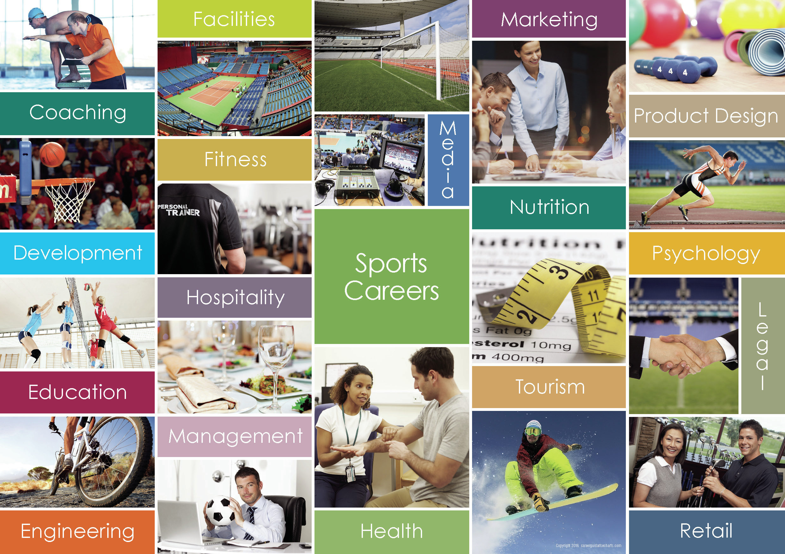

Sports
About Sports
A career in sports involves intense training, dedication, and talent in fields like athletics, cricket, football, or tennis.
Career in Sports
What is a Career in Sports?
A career in sports encompasses a wide range of professions within the sporting world, from being an athlete to working in coaching, sports management, sports journalism, and even sports medicine. It involves physical and mental dedication, and individuals working in this field have the chance to contribute to the physical well-being, success, and entertainment of others. Careers in sports not only provide exciting job opportunities but also allow individuals to play an essential role in the development and promotion of sports globally.
Key Skills Required in Sports
Key skills in a sports career include physical fitness, mental toughness, and teamwork. Athletes, for example, must have a high level of discipline, dedication, and resilience to succeed. Sports professionals also require excellent communication and leadership abilities. Coaches and managers need strong strategic thinking, organizational skills, and an understanding of team dynamics. Other essential skills include time management, physical endurance, and the ability to handle pressure, especially during competitive events.
Popular Career Options in Sports
Sports offer numerous career paths for individuals passionate about athletics. These include professional athletes, coaches, sports managers, physiotherapists, sports agents, and fitness trainers. Additionally, careers in sports media, such as sports journalism or broadcasting, are also in demand. People with expertise in sports science can work in research, data analysis, or sports medicine. Another growing field is sports marketing, where professionals help promote teams, events, and sports brands.
Career Opportunities After a Sports Degree
After completing a degree in sports-related fields, you can pursue various career opportunities. Many graduates become coaches or sports managers in schools, colleges, or professional leagues. Others may choose to work in sports facilities or health clubs as personal trainers or fitness instructors. Sports medicine professionals, such as physiotherapists and athletic trainers, are highly sought after. Career opportunities also extend to positions in sports journalism, broadcasting, event management, and sports marketing, where you can combine your passion for sports with other interests like communication or business.
How to Pursue a Career in Sports?
Pursuing a career in sports often begins with a strong foundation in physical education or sports science. For those wishing to become professional athletes, starting at a young age with training, practice, and participation in competitions is key. For other sports-related careers, obtaining a degree or diploma in sports management, sports medicine, or coaching can be beneficial. Internships, apprenticeships, and volunteering at sporting events provide hands-on experience, and networking is essential to make industry connections. Continuing education and certifications in fitness, coaching, or sports management can help you advance in this field.
Sports Psychology
Sports psychology is a specialized field that helps athletes improve performance through mental techniques. Sports psychologists work with athletes to address issues such as stress, anxiety, confidence, and concentration. Their goal is to enhance an athlete’s mindset, helping them perform better both mentally and physically. Sports psychology professionals often work closely with coaches, athletes, and medical staff to create mental training programs, which are crucial for athletes dealing with pressure and competition. It is an exciting and evolving field for those passionate about helping athletes thrive.
Sports Management
Sports management involves overseeing the business aspects of sports teams, organizations, and events. It includes roles such as managing finances, marketing, contracts, and event coordination. A career in sports management requires a deep understanding of the sports industry, as well as leadership and organizational skills. Professionals in this field often work with teams, sponsors, venues, and even government bodies. It is a dynamic career that combines a passion for sports with business acumen, offering opportunities in both professional sports leagues and grassroots development.
Sports Journalism
Sports journalism involves writing, broadcasting, and reporting on various sports events and topics. Journalists in this field cover live events, interview athletes and coaches, and analyze games. They also provide insights, commentary, and opinion pieces on the sports world. Sports journalists can work for newspapers, television, online publications, and sports websites. Strong writing skills, knowledge of sports, and the ability to work under tight deadlines are essential. With the rise of digital media, sports journalism has expanded, offering more opportunities for those who want to share their passion for sports with a wider audience.
Sports Medicine
Sports medicine is a field focused on preventing and treating injuries related to sports and exercise. Sports medicine professionals, such as physiotherapists, chiropractors, and athletic trainers, play a vital role in helping athletes recover from injuries and return to their sports. They provide rehabilitation, pain management, and advice on injury prevention. A career in sports medicine requires a deep understanding of anatomy, physiology, and sports science. Professionals in this field often work with athletes of all levels, from amateurs to professionals, ensuring they maintain peak physical condition.
Fitness Training and Personal Training
Fitness training and personal training are careers that focus on helping individuals improve their health, fitness, and athletic performance. Personal trainers design customized workout programs for clients based on their goals, whether it’s weight loss, muscle gain, or overall fitness improvement. They also provide guidance on nutrition, lifestyle, and injury prevention. Becoming a personal trainer requires knowledge of exercise science, anatomy, and fitness principles. It is an ideal career for individuals passionate about health and fitness, offering opportunities in gyms, private practice, and even online coaching.
How to Achieve Your Goals
- Identify your sport and work with a professional coach.
- Participate in district, state, and national-level competitions.
- Stay physically fit and mentally focused.
Future Jobs and Opportunities
- Professional Athlete, Coach, Fitness Trainer.
- Sports Analyst, Commentator, Event Manager.
- Opportunities in sports academies and organizations.